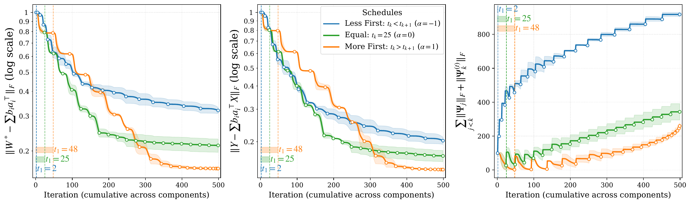
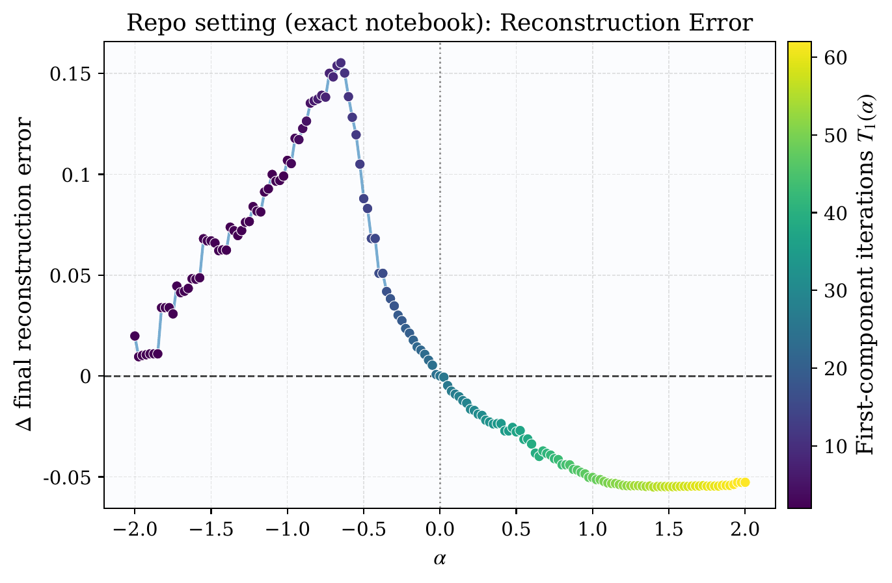
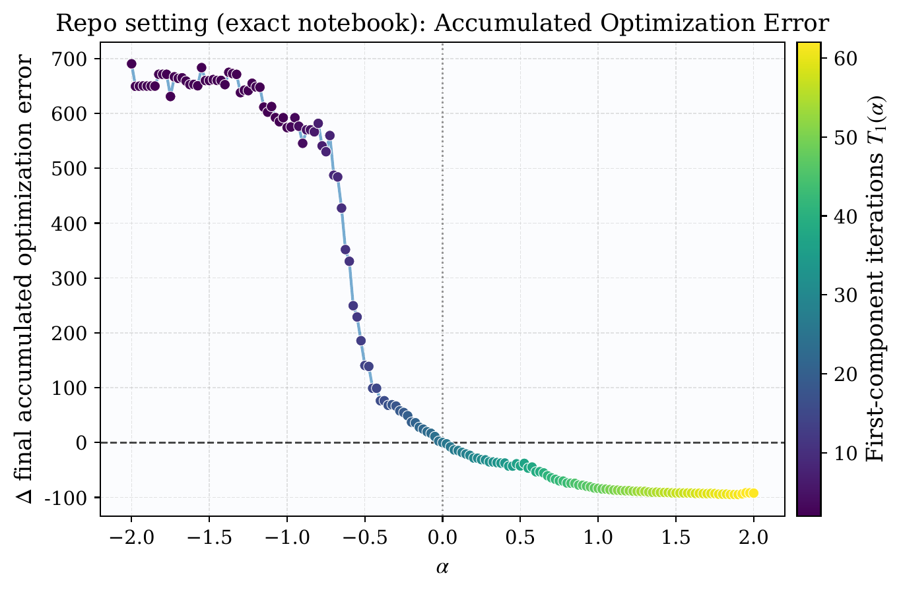
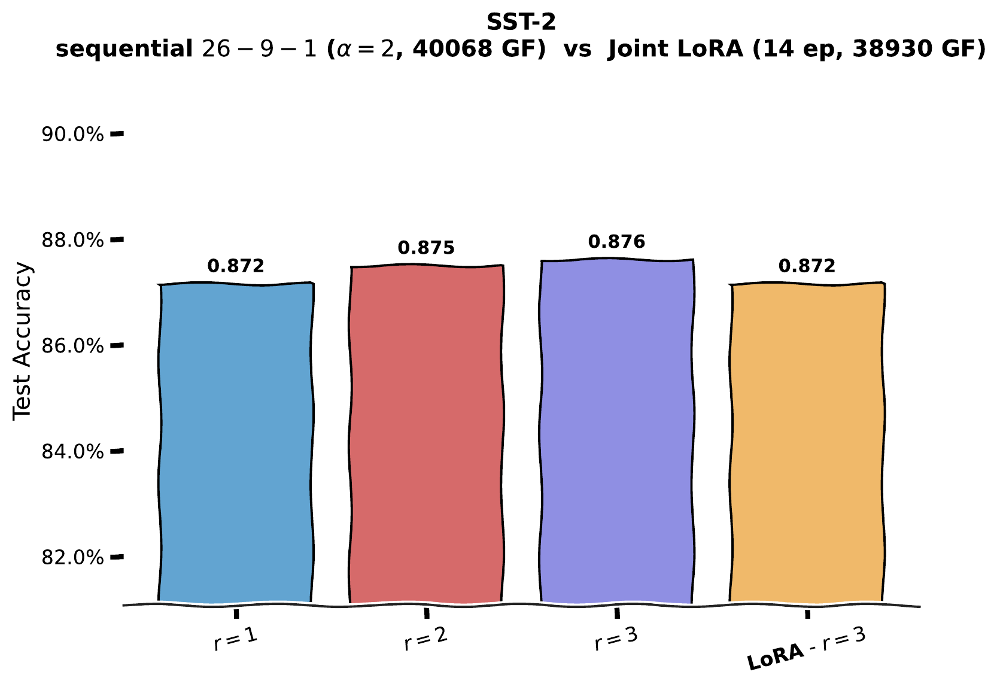
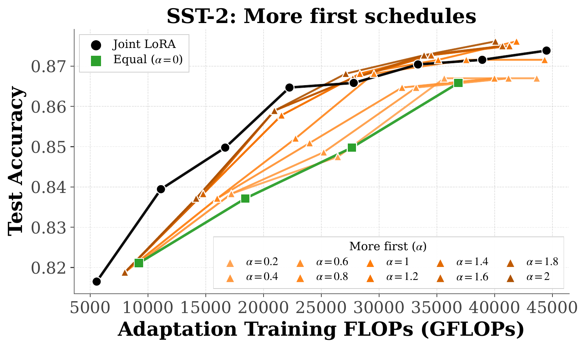

When models are built up one piece at a time, mistakes in the first piece don't stay there — this paper pins down, mathematically, how they cascade.
Many modern training schemes — low-rank adaptation (LoRA) being the canonical example — proceed in stages. You fit a small low-rank update, freeze it, then fit another, and so on. Each subsequent step learns on the residual left by the previous ones. It is convenient. It is widely used. And it is largely uncharacterized: how does a numerical mistake in step 1 leak into step 2, 3, … $r$? (A companion piece, AdaPaD: From PCA to LoRA, asks what changes if you do this same deflation in parallel instead — the present paper is the sequential half of that picture.)
This paper studies that question in the cleanest non-trivial setting where the math goes through. Consider linear low-rank regression:
Instead of solving for $\mathbf{W}$ jointly, the sequential algorithm peels off the dominant rank-1 component, subtracts its prediction from the target, and repeats:
Two observations make this worth studying. First, sequential rank-1 deflation is structurally identical to PCA-style algorithms, OMP-style greedy methods, and several recent PEFT recipes — a unified analysis pays back across multiple methods. Second, each step uses a finite-precision solver. There is always some per-step residual error $\boldsymbol{\Psi}_k$. The question is whether these errors stay small or compound.
The paper's central object is the cumulative training error after $r$ rank-1 steps. Theorem 1 bounds it by
Two terms. The truncation tail is the unavoidable cost of throwing away components past rank $r$ — it is what you would also pay with a perfect oracle SVD. The interesting term is the second: each per-step error $\boldsymbol{\Psi}_k$ is amplified by a product of factors
where $\sigma_j^\star$ is the $j$-th singular value of the true regressor and $\mathcal{T}_j^\star = \sigma_j^\star - \sigma_{j+1}^\star$ is the $j$-th singular gap.
The cascade is geometric in the worst case. If every gap is just barely positive, a small error in step 1 can grow by a factor of, say, 8 by step 8 — and that is on top of fresh errors introduced at every later step.
Theorem 1 is about training error — how well does the model fit the data we trained on? A separate, harder question is parameter recovery: how close is the learned $\widehat{\mathbf{W}}$ to the true $\mathbf{W}^\star$?
Under positive singular gaps and a positive minimum singular value of $\mathbf{X}$, the recovery error inherits the cascade structure. The condition number $\kappa(\mathbf{X})$ replaces the data scale — well-conditioned design helps; ill-conditioned design hurts.
With i.i.d. $\mathcal{N}(0,\varepsilon^2)$ label noise and a small-noise ordering condition, the recovery error decomposes into a (cascading) signal term plus an additive noise term that scales as $\varepsilon \sqrt{n \log(1/\gamma)}$. A standard bias-variance trade-off in the truncation rank $r$ appears.
The cascade structure has an immediate practical consequence. Errors at early steps get amplified through every later step; errors at late steps are not. So if you have a fixed total compute budget $T$ for solving the $r$ per-step rank-1 sub-problems, you should spend more on the early steps.
The paper formalizes this with a one-parameter family of schedules indexed by a trend parameter $\alpha$. Setting $x_k = 1 - 2(k-1)/(r-1)$, the per-step compute is
Positive $\alpha$ shifts the budget toward earlier components; negative $\alpha$ toward later. Three regimes:
| Schedule | $\alpha$ | Effect |
|---|---|---|
| less-first | −1 | Early steps starved; cascade amplifies errors. Worst empirically. |
| equal | 0 | Naïve uniform allocation. Baseline. |
| more-first | +1 to +1.5 | Saturates around $\alpha \approx 1.5$. Best empirically. |
The synthetic experiments instantiate the family at $(r, T, m) = (20, 500, 2)$. Three named schedules are compared head-to-head, then $\alpha$ is swept on a fine grid.

The three panels say the same thing three ways. Whenever the first component gets more budget — left panel: $t_1$ is far to the right; right panel: the green curve rises slowly — the final error is smaller. The right panel makes the cascade visible: less-first accumulates numerical error at a much higher rate, exactly the failure mode Theorem 1 predicts.


The fine-grained sweep is asymmetric. Moving from $\alpha = 0$ into the more-first half ($\alpha > 0$) buys substantial gains until roughly $\alpha \approx 1.5$, where the curves flatten. Pushing further yields diminishing returns. Moving in the other direction ($\alpha < 0$) sharply degrades both quantities. How much you front-load matters; just that you front-load is the qualitative pattern.
The paper's theorems are stated for fixed-design linear regression. To probe how far the qualitative scheduling pattern travels, the authors also study sequential rank-1 LoRA on simple vision tasks (MNIST, CIFAR10, CIFAR100) and a language task (DistilBERT on SST-2). The vision experiments are in the paper; here we show the SST-2 results because they are the cleanest cross-domain transfer.

The bar chart says something almost embarrassing: on this task, the first rank-1 update via the sequential procedure already matches the jointly trained rank-3 LoRA. The second and third components push accuracy up by less than half a percentage point each. Whatever capacity sequential rank-1 adaptation is offering, it is concentrated in the first component — exactly as the cascade analysis would predict, in qualitative terms.

Two patterns. First, most more-first schedules sit above the equal-schedule baseline (green) at intermediate compute — the schedule choice matters in addition to the total budget. Second, within the more-first branch the dependence on $\alpha$ is not monotone — the orange curves cluster closely at higher compute, so once early components already get a substantial share, further front-loading produces diminishing differences. The same pattern as the synthetic experiment, in a domain the theory does not formally cover.
The abstract is unusually explicit about this, and it is worth restating. The paper is an analysis framework, not a sales pitch for a new method.
Three reasons.
Method-agnostic insight. The cascade analysis covers any algorithm that builds up a model one low-rank piece at a time. That includes the LoRA family, OMP-style greedy methods, deflation-based PCA, and several incremental compression schemes. One theorem informs the design of all of them.
Resource allocation guidance. The more-first schedule is a concrete, implementable recommendation: when training in stages on a fixed compute budget, spend disproportionately more on the first few stages. It costs nothing to apply and the experiments show consistent improvement across linear regression and two cross-domain LoRA probes.
Honest scoping. The paper does not claim a new state-of-the-art method or beat LoRA on benchmarks. It explains why sequential methods behave the way they do. In a field where most papers oversell, an explanatory contribution that cleanly delineates what is and is not proven is increasingly valuable as a foundation other work can build on.
Where this fits. This work is the linear half of a longer programme. The companion piece — AdaPaD: From PCA to LoRA — asks what happens if you do the deflation in parallel instead of sequentially: the workers don't compound errors; their bounds self-correct across rounds. Reading the two together makes the trade-off explicit: sequential rank-1 is cheap and analytically clean, but it cascades; parallel rank-1 is communication-bound but self-corrects. The follow-up on nonlinear sequential rank-1 (SG-LoRA) is in progress.
@article{vandchali2026onerank,
title = {One Rank at a Time: Cascading Error Dynamics in Sequential Learning},
author = {Vandchali, Mahtab Alizadeh and Liao, Fangshuo and Kyrillidis, Anastasios},
journal = {Transactions on Machine Learning Research (TMLR)},
year = {2026},
note = {Accepted, in press. arXiv:2505.22602}
}